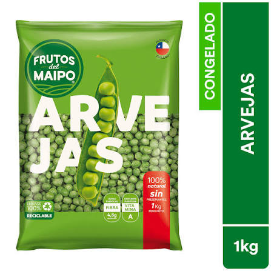

AGROVERDE
AGROVERDE
AGROVERDE
AGROVERDE
Cultivo de alta calidad (Pisum sativum L.) desarrollado en la Ciudad de Comayagua para el mercado internacional[cite: 1].
Ver IntegrantesEstudiantes de la carrera de Agroexportación comprometidos con el desarrollo agrícola sostenible[cite: 1].
La arveja o guisante es uno de los cultivos más antiguos y fundamentales de la agricultura[cite: 1]. Posee la extraordinaria característica de fijar nitrógeno de forma natural en el suelo, reduciendo la dependencia de fertilizantes químicos y actuando como cultivo de cobertura ideal para evitar la erosión[cite: 1].
Nuestra meta es producir frutos de alta calidad listos para el consumo (Ready-to-eat), aplicando las mejores medidas de comercialización internacional[cite: 1].

Excelente fuente natural de fibra, hierro y vitaminas A, B y C indispensables para una de las dietas más balanceadas.
Ricas en antioxidantes esenciales que protegen de forma directa las funciones de la vista.
Colabora activamente en el buen funcionamiento intestinal y ayuda a fortalecer los huesos.
Cálculos basados en una densidad poblacional de 222,222 plantas por hectárea con un distanciamiento de doble hilera[cite: 1].
| Producto | Presentación | Cantidad por Ha | Precio Unitario | Ingresos Brutos |
|---|---|---|---|---|
| Arveja Premium | Bandeja de 1 lb (Ready-to-eat)[cite: 1] | 48,840 bandejas[cite: 1] | 106.00 Lps.[cite: 1] | 5,177,040.00 Lps.[cite: 1] |
| TOTAL DE INGRESOS BRUTOS: | 5,177,040.00 LPS[cite: 1] | |||

El mercado estadounidense absorbe arveja en múltiples formatos debido al auge de alternativas vegetales[cite: 1]. Para acceder de forma segura, el SENASA como núcleo regulador en Honduras exige[cite: 1]:
El campo no solo produce alimentos; cultiva el futuro, la constancia y el desarrollo de nuestra tierra. Con esfuerzo y conocimiento técnico, transformamos la agricultura de Honduras en calidad de exportación para el mundo.